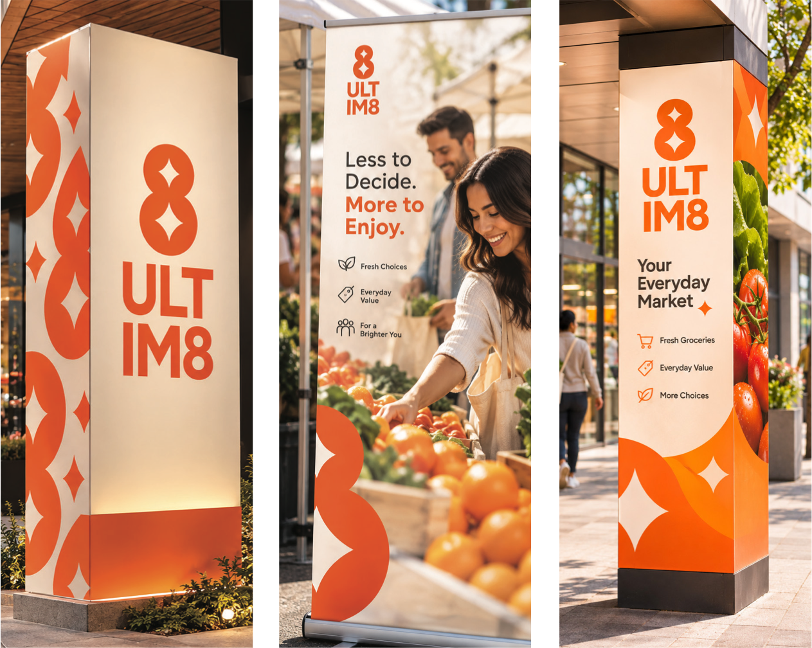
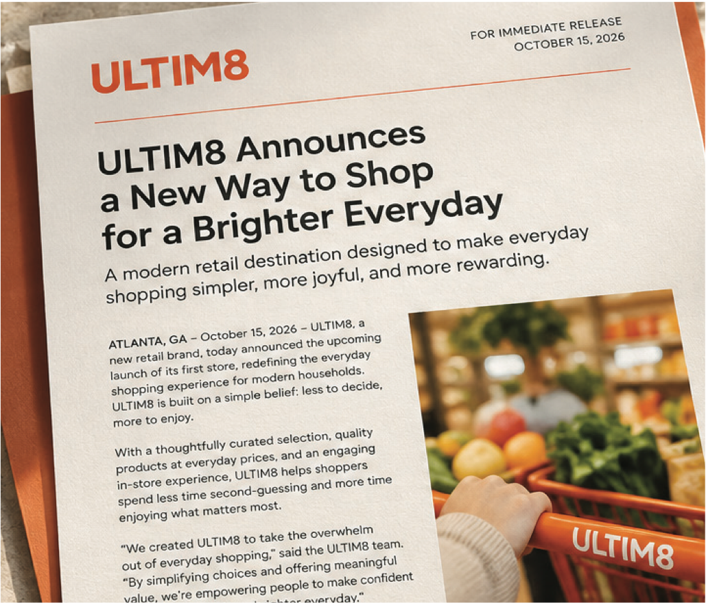

Primary
Logo
Our primary logo is the preferred expression of our brand identity and should be used consistently across major brand communications, including storefronts, app splash screens, website headers, billboards, and brochures. It should always take precedence when sufficient space and visibility allow for clear recognition.
The diamond-shaped elements within the number 8 symbolize intelligent guidance (AI), clarity, and balance. Their symmetrical forms convey harmony and calmness, while the open negative space reflects our commitment to cognitive relief.
The minimum clear space around our wordmark is equal to half the height of the number “8.” This proportional measurement creates a consistent spacing system that scales naturally with the logo across different sizes and applications.
Stop here — the logo is too big for this space. Its clear space no longer fits, so do not increase the size any further.
Logo Do’s
and Don’ts
Our logo should be applied consistently across all brand communications to maintain a strong and recognizable visual identity. Following these guidelines ensures clarity, legibility, and a unified brand experience across every touchpoint.
Do’s
Tap a thumbnail to see each approved use.
Don’ts

Tap a thumbnail to see each incorrect use.
Logo
Variety Pack
Logo Mark
The standalone 8 serves as a recognizable visual shorthand for ULTIM8, strengthening brand recognition without relying on the full wordmark.
The diamond-shaped elements within the 8 form the foundation of a dynamic visual system. These elements can be adapted into service-specific graphics. This flexible approach creates a unified yet adaptable brand identity, connecting different services through a consistent visual language
Logo
Variety Pack
Stacked Logo
The stacked logo provides an alternative arrangement of the primary identity, designed for compact spaces. It ensures brand visibility and legibility where the horizontal logo may not fit effectively.
This variation compliments the primary logo and should be used when the available space makes the horizontal arrangement less effective.
The stacked variation is preferred for applications where vertical composition and efficient use of space are essential. Can be used in vertical pop-up banners, narrow posters, small-format advertisements, glass door graphics and pillar signage.

Logo
Variety Pack
Type Logo
ULTIM8
The logotype prioritizes readability and clarity by presenting the complete brand name in a simplified typographic form.
It serves as an alternative when the primary logo’s intricate details may lose visibility at smaller sizes or in text-heavy applications. The logotype provides a clean, professional, and versatile expression of the brand identity.
The logotype is preferred for applications where clear brand identification, legibility, and seamless integration with text are essential. Can be used in official letters, invoices, reports, contracts, press releases, website footers, internal app pages, and corporate announcements.


Logo
Variety Pack
TAGLINE LOGO Tagline logo variation creates an emotional connection with customers and strengthens brand positioning.

“Less to Decide. More to Enjoy.” reflects commitment to reducing decision overload through curated choices and guided shopping experiences. It emphasizes giving customers more confidence, less mental effort, and more time to enjoy life.
“Less to Decide.
More to Enjoy.”
Used in brand storytelling and experience-focused touchpoints, including AI assistance kiosk welcome screens, interactive shopping demonstrations, customer engagement campaigns, and brand manifesto displays. Unlike other logo variations, this lockup focuses on communicating the brand promise rather than identification alone.
Make-up
Palette
Our warm color palette creates a bright, energetic, and welcoming shopping environment that reflects ULTIM8’s friendly and approachable personality.
Orange, our primary color, brings warmth, optimism, and strong brand recognition, while complementary pastels create a sense of comfort and visual balance. Together, these colors establish clear visual hierarchies, reduce cognitive overload, and make everyday shopping feel simpler, more enjoyable, and intuitive.
Click a swatch to copy its HEX code.